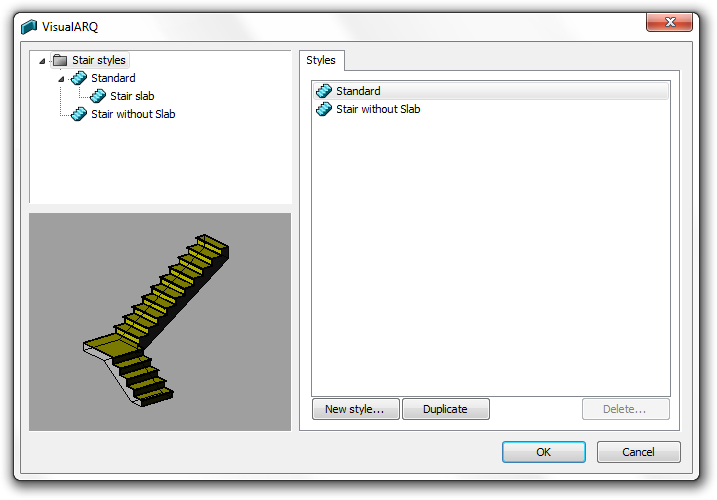

Styles d'escalier
vaEscalierStyles
Icône :
Escalier > Propriétés de style
Raccourci :
Le style d'escalier définit les caractéristiques de l'escalier. Vous pouvez définir les paramètres suivants pour chaque style de escalier : Nom, Attributs,
Type, Marches et Règles.
Les styles d'escalier sont définis par un composant de Dalle qui peut être ajouté ou supprimé à tout moment.
Pour créer un style de escalier, cliquez sur le bouton Nouveau style dans le gestionnaire de styles. Utilisez l'assistant affiché pour définir les paramètres de l'escalier.

Boîte de dialogue du Gestionnaire de styles d'escalier
Modifications sur le style en général
Utilisez la commande
vaEcalierStyles ou,
- Utilisez la commande vaStylePropriétés, puis sélectionnez un escalier et appuyez sur Entrée, ou
- Cliquez avec le bouton de droite sur
 , puis sélectionnez un escalier et appuyez sur Entrée, ou
, puis sélectionnez un escalier et appuyez sur Entrée, ou
- Sélectionnez un escalier et ouvrez le menu contextuel en appuyant sur le bouton de droite pendant un instant puis sélectionnez Fenêtre > Propriétés de style, ou
- Appuyez sur Alt, Maj ou Ctrl puis double cliquez sur un escalier.
Les modifications réalisées sur un style sont appliquées à
tous les éléments de ce style.
Modification d'un objet particulier
- Utilisez la commande vaPropriétés, puis sélectionnez un escalier et appuyez sur Entrée, ou
- Cliquez sur , puis sélectionnez un escalier et appuyez sur Entrée, ou
- Sélectionnez un escalier et ouvrez le menu contextuel en appuyant sur le bouton de droite pendant un instant puis sélectionnez Fenêtre > Propriétés, ou,
- Double-cliquez sur un escalier.
Les modifications sont appliquées au style de
l'élément sélectionné.
Attributs
Les attributs définissent les caractéristiques de chaque style d'escalier pour l'affichage et l'impression. Attributs valides :
- Général : Calque, Visibilité et Matériau
- Projection : Couleur, Type de ligne, Largeur d'impression de ligne et Couleur d'impression de ligne
- Section : Couleur, Type de ligne, Largeur d'impression de ligne, Motif, Échelle du motif, Angle du motif et Couleur du motif
Type
Le paramètre Type définit le type d'escalier, qui peut-être :
- Défaut : un palier est inséré dans la zone de courbure de l'escalier.
- Marches balancées : la valeur d'emmarchement est appliquée au centre de toutes les marches.
Marches
Les composants de la marche sont :
- Dalle de giron : elle est affichée en 3D, dans les vues en élévation et dans les sections mais elle ne se voit pas dans la
vue en plan.
Les propriétés de la dalle de giron sont l'épaisseur et le nez.
- Dalle de contremarche : elle est affichée en 3D, dans les vues en élévation et dans les sections mais elle ne se voit pas dans la
vue en plan.
La dalle de contremarche possède une propriété, son Épaisseur.
Règles :
Activer cette option lorsque vous voulez définir la pente de l'escalier en utilisant la règle suivante : 2*contremarches + 1 giron = "nombre x".
Par défaut, le "nombre x" va de 0,54 m à 0,70 m et représente la gamme de grandeurs d'un pas humain normal.
Composants de l'escalier
Dalle 
Les escaliers peuvent avoir une dalle. Les dalles des escaliers peuvent être créées ou supprimées en cliquant avec le bouton de droite sur le nom d'un style escaliers (Nouveau > Dalle d'escalier ou Supprimer). L'épaisseur de la dalle peut être modifiée dans l'onglet Géométrie lors de la sélection des composants de la dalle.
La dalle de l'escalier peut être prolongée jusqu'à la dalle de départ et la dalle du palier en modifiant son épaisseur dans la section Propriétés de VisualARQ (boîte de dialogue Propriétés de Rhino  ) :
) :
- Épaisseur de la dalle supérieure : L'épaisseur de dalle nécessaire au prolongement de l'épaisseur de la dalle à l'arrivée de l'escalier.
- Épaisseur de la dalle inférieure : L'épaisseur de dalle nécessaire au prolongement de l'épaisseur de la dalle au départ de l'escalier.
REMARQUE : Les propriétés objet de l'escalier ne font pas partie du style d'escalier et ne peuvent pas être définies dans la boîte de dialogue d'insertion.
 clic droit [clic gauche]
clic droit [clic gauche]